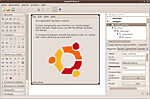

Quickly
Dieser Artikel wurde für die folgenden Ubuntu-Versionen getestet:
Ubuntu 14.04 Trusty Tahr
Zum Verständnis dieses Artikels sind folgende Seiten hilfreich:
Quickly beschreibt sich selbst als Projekt, „... [which] helps you create software programs (and other things) quickly“, also als ein Projekt, mit dem die Software-Entwicklung (für Ubuntu) schnell und einfach sein soll. Mit Quickly kann man in der Tat recht schnell grafische, GTK-basierte Anwendungen für Ubuntu entwickeln, da die Software den „Rahmen“, also das grundlegende Fenster und Fenstermanagement komplett aus Vorlagen mitbringt, Bazaar als Versionsverwaltung in weiten Teilen für das eigene Projekt automatisiert sowie einen einfachen Mechanismus bietet, .deb-Pakete zu bauen und diese dann auch bei Launchpad öffentlich zur Verfügung zu stellen.
Aber: auch wenn viele Dinge mit Quickly schneller und einfacher sind - ohne Programmierkenntnis in Python kann man das Programm nicht sinnvoll nutzen. Es stellt lediglich den Rahmen zur Verfügung und erspart so lästige Routinearbeit, aber die eigentliche Applikation muss nach wie vor programmiert werden und kann nicht via GUI „zusammenengeklickt“ werden.
Quickly kann nur in Kombination mit Python genutzt werden. Als grafische Bibliothek setzt es auf GTK, wodurch die entwickelten Applikationen primär für Ubuntu und Xubuntu geeignet sind. Alternativ kann man mit Quickly aber auch auf Pygame  basierte Spiele entwickeln.
basierte Spiele entwickeln.
Auch wenn Quickly nicht direkt auf CouchDB bzw. Desktopcouch aufsetzt bzw. davon abhängt, so ist dies laut den Entwicklern doch die bevorzugte Speichermethode von Applikationen, welche hiermit entwickelt werden. Daher ist es hilfreich, wenn man mit den Grundkonzepten der dokumentenorientierten Datenbank CouchDB vertraut ist.
Hinweis:
Quickly ist zwar noch bis einschließlich Ubuntu 14.04 in den Paketquellen enthalten, wird aber seit 2011 nicht mehr weiter entwickelt.
Installation¶
Quickly wird über das folgende Paket installiert [1]:
quickly (universe)
 mit apturl
mit apturl
Paketliste zum Kopieren:
sudo apt-get install quickly
sudo aptitude install quickly
Da das Paket eine Menge Abhängigkeiten hat, werden nach der Installation bis zu 250 MB Festplattenplatz zusätzlich belegt.
Bei der Installation wird eine Frage zur E-Mail-Konfiguration gestellt. Hier kann man, sofern man sich nicht sicher ist, ohne Weiteres auch "Keine Konfiguration" angeben.
Benutzung¶
Der Programmaufruf erfolgt stets über die Kommandozeile[2], auch wenn sich dann zumeist Fenster öffnen und die weitere Bearbeitung dann via grafischer Nutzeroberfläche erfolgt.
Als erstes wird ein Projekt angelegt, die allgemeine Syntax ist wie folgt:
quickly create VORLAGE PROJEKT_NAME
Mögliche Vorlagen sind ubuntu-application (für Applikationen mit grafischer Oberfläche) und ubuntu-pygame (für Spiele) sowie ubuntu-cli für Kommandozeilenprogramme. PROJEKT_NAME kann dabei ein beliebiger Name sein. Daraufhin legt Quickly im aktuellen Verzeichnis ein Verzeichnis mit dem Namen des Projektes an, kopiert alle notwendigen Vorlagen und richtet Bazaar für das Projekt ein. Hat alles funktioniert, startet die Applikation direkt in einem eigenen Fenster mit den Standardeinstellungen und -designs.
Nun kann die Applikation den eigenen Bedürfnissen angepasst werden. Dazu wechselt man ins Verzeichnis der Applikation und verwendet den Befehl
quickly edit PROJEKT_NAME
Daraufhin werden alle Python-Dateien des Projekts im Standardeditor (also unter Ubuntu in der Regel gedit) geöffnet. Diese können dann editiert und gespeichert werden. Für Projekte vom Typ ubuntu-application kann zusätzlich die grafische Oberfläche editiert werden. Dazu ruft man, ebenfalls im Verzeichnis der Applikation, folgenden Befehl auf:
quickly design PROJEKT_NAME
Nun wird Glade , das Standardprogramm von GNOME zum Editieren grafischer GTK-Oberflächen, geöffnet.

Hier kann die Oberfläche nach eigenen Vorstellungen angepasst und erweitert werden.
Will man die eigene Applikation testen, so verwendet man den Befehl
quickly run PROJEKT_NAME
Weiterhin bietet Quickly die Möglichkeit, das eigene Projekt als .deb-Paket zu paketieren, und zwar über den Befehl
quickly package
Außerdem kann man das eigene Projekt bei Launchpad veröffentlichen, wozu aber ein Konto bei Launchpad sowie ein PPA notwendig ist:
quickly release
Hilfe¶
Wie in der Einleitung bereits erwähnt, vereinfacht Quickly zwar das Erstellen von Applikationen, macht aber Programmiererfahrung mit Python und GTK keinesfalls überflüssig.
Eine sehr ausführliche, englischsprachige Einführung inklusive Beispielapplikation erhält man über den Aufruf von
quickly tutorial ubuntu-application
(bzw. ubuntu-pygame anstelle von ubuntu-application). Das Tutorial ist auf jeden Fall lesenswert, besonders vor der ersten Nutzung von Quickly. Außerdem findet man dort eine komplette Befehlsreferenz zu Quickly.
 – Übersichtsseite zum Thema Programmierung
– Übersichtsseite zum Thema Programmierung- Erstellt mit Inyoka
-
 2004 – 2017 ubuntuusers.de • Einige Rechte vorbehalten
2004 – 2017 ubuntuusers.de • Einige Rechte vorbehalten
Lizenz • Kontakt • Datenschutz • Impressum • Serverstatus -
Serverhousing gespendet von